La Stratocaster es una guitarra de cuerpo macizo, obtenido a partir de una sola pieza de madera, aunque en la actualidad la mayoría se fabrica utilizando varias partes encoladas. El mástil va unido a él mediante atornillado, salvo en algunos modelos Custom en que se recurre al encolado o al mástil de la misma pieza que el cuerpo Neck-through.
Añade también una pastilla más en su construcción. El selector de pastillas de los modelos actuales cuenta, por lo general, con 5 posiciones diferenciadas, dos de las cuales activan a la vez dos pastillas de la guitarra, conectándolas en paralelo, aunque en los primeros modelos solo disponía de 3 posiciones, una para cada pastilla. Esto fue así hasta que algunos músicos encontraron la posibilidad de disponer de dos nuevos sonidos "desfasados", situando el selector en las posiciones intermedias. Estas nuevas posibilidades de sonido junto con un diseño futurista para la época supusieron quizá el mayor reclamo de la Strat frente a la Telecaster. Por su parte, las dos posiciones intermedias (conexión en paralelo) le otorgan al sonido un cariz mucho más líquido y profundo, de menor percusividad.
El mayor de los atractivos de esta guitarra radica en su sonido. En las tres posiciones extremas del selector en la configuración estándar se activan una a una las pastillas (de bobinado simple), que dotan al instrumento con una gama de sonidos extensa y fructífera. Profundamente sensible al ataque de la púa, se considera el timbre de la Strat uno de los más característicos de la historia de la guitarra moderna.
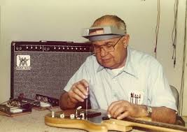
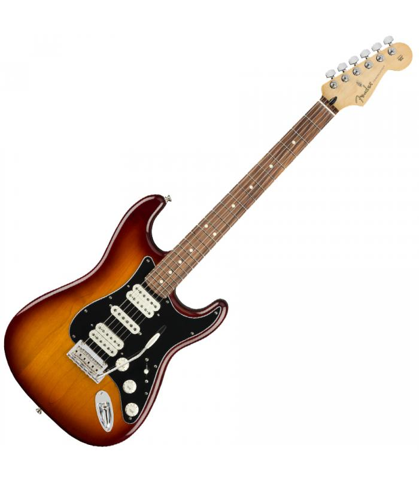
Telecaster
La Fender Telecaster es una guitarra eléctrica de cuerpo macizo mundialmente conocida, llamada "la tabla" en sus comienzos. Se caracteriza por la simplicidad en su diseño y por el sonido que se obtiene de sus dos pastillas de bobinado simple o single coil, que aparecen en la inmensa mayoría de sus modelos en lugar de las de bobinado doble o humbuckers que aparecieron posteriormente en otras guitarras. Dicho sonido se considera especialmente adecuado para la guitarra rítmica, aunque se utiliza igualmente en el soft rock, en el rock de los 60 o en el punk, también muy utilizada en el math rock y la new wave; pero sobre todo es la guitarra eléctrica por excelencia para la música country.
A continuacion la imagen de una de las primeras Telecaster, junto a alguno de los mayores artistas que las utilizaban.
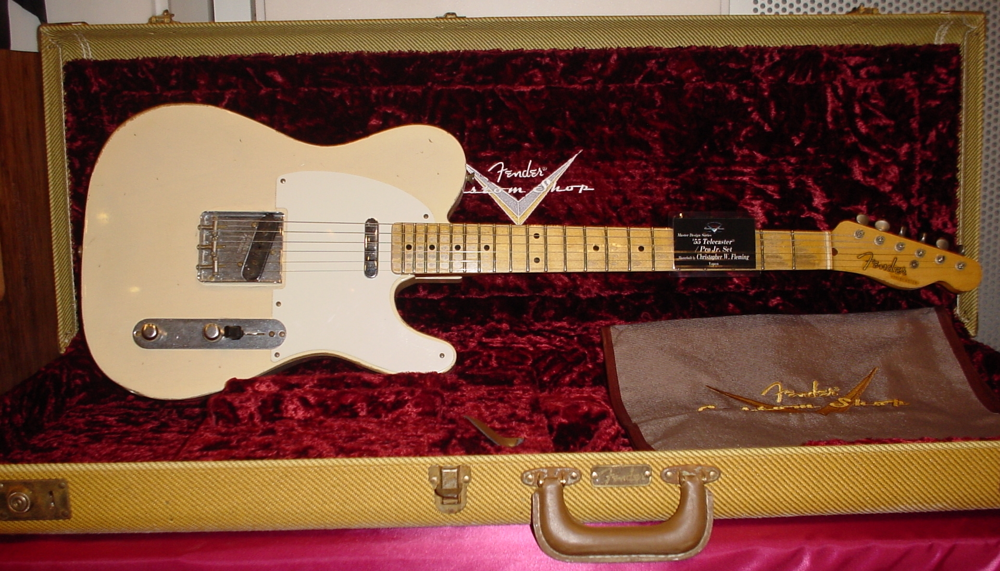
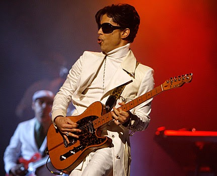
Les Paul
En 1894, el luthier Orville Gibson empezó a construir instrumentos en su taller de Kalamazoo, una ciudad del estado de Michigan. A diferencia de otros productores de la época, él había innovado con construcciones basadas en las tapas arqueadas de los violines, un factor que aumentó su popularidad de manera progresiva y también lo llevó a incursionar en la manufactura de sus primeras guitarras acústicas. Aquello desenvolvió en que —junto al apoyo de cinco empresarios— fundara la Gibson Mandolin-Guitar Manufacturing Company, lo que también se tradujo en un aumento de sus números de producción.
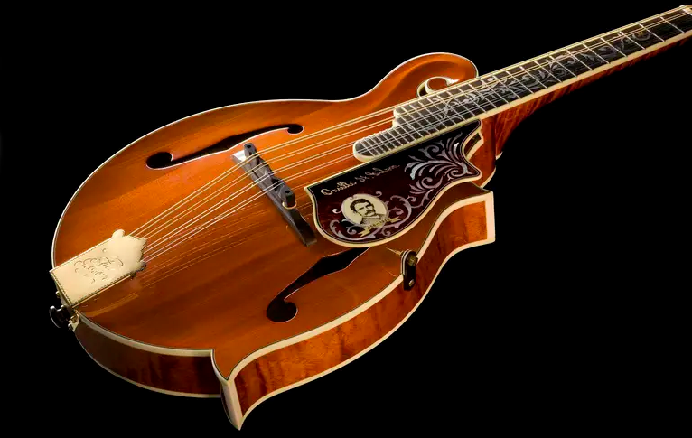
Después de que Orville Gibson falleciera en el St. Lawrence State Hospital (hoy llamado St. Lawrence Psychiatric Hospital) en 1918, la compañía creó modelos como la ES-150, la J-200 y la J-45, entre otros, hasta que Chicago Musical Instruments Company la compró en 1944. Por aquel entonces, el músico Lester William Polsfuss (más distinguido como Les Paul) ya era conocido por sus habilidades para experimentar en el estudio, un fenómeno que también aplicó a la confección de instrumentos. Con el propósito de reducir los acoples y aumentar el tiempo de duración de las notas, el músico armó un prototipo de guitarra de cuerpo sólido, el cual fue construido como un rectángulo con dos secciones adicionales a sus lados, las cuales mantuvieron la estética de las guitarras ES de ese tiempo.
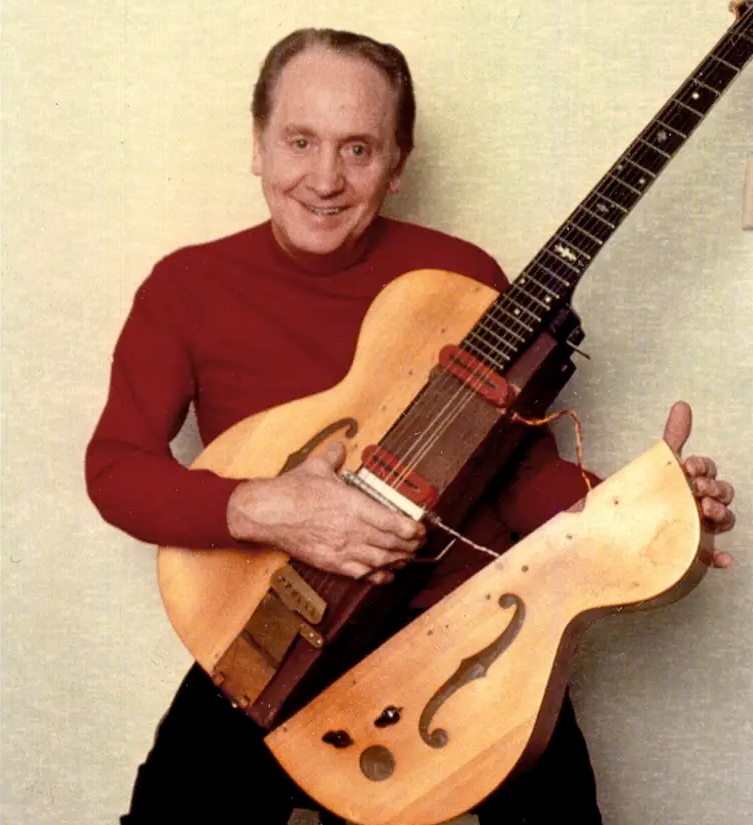
Así, en 1946 acudió al directorio de Gibson para proponer su invento como un nuevo modelo, idea que los administrativos ni siquiera pensaron en considerar. Por su parte, Fender promocionó los primeros ejemplares Telecaster como tal en 1951 (antes se había construido la Esquire como prototipo), los cuales fueron un éxito rotundo de ventas. Esto llevó a que la empresa —ya bajo la presidencia de Ted McCarty (1950 a 1966)—, aceptara la propuesta e iniciara con la fabricación de las Gibson Les Paul desde 1952.
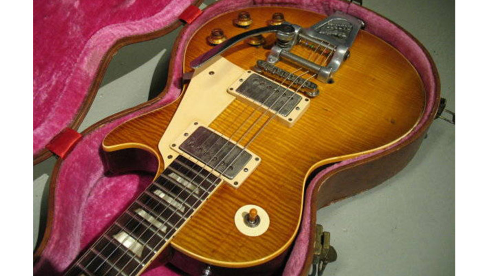
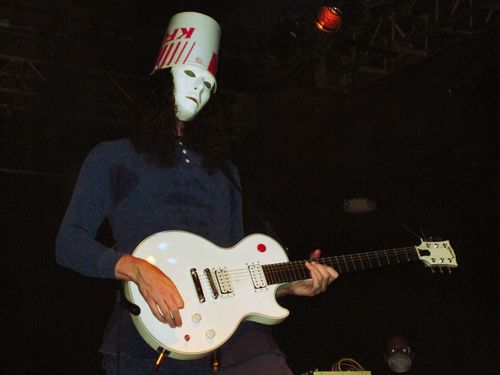
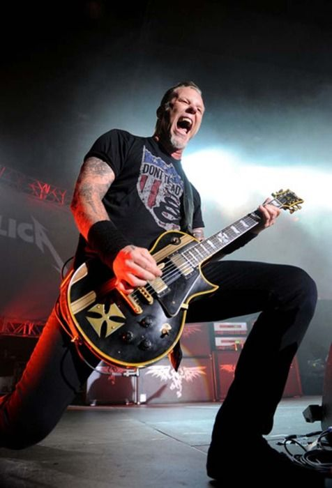
Double cut o Gibson SG
En 1960, las ventas de la guitarra eléctrica Les Paul cayeron muy por debajo de lo que en otros años se viera, así que el modelo tuvo que ser modificado por Gibson. En 1961, la Les Paul salió al mercado con una forma renovada, con un cuerpo más delgado y con dos agudos cuernos recortados que daban más acceso a los trastes superiores. Estas modificaciones abarataban los costos de producción. Sin embargo, el reconocido guitarrista Les Paul, uno de los más famosos artistas promotores de la marca y quien le había puesto su propio nombre al modelo, observó esta renovada versión del instrumento en el aparador de una tienda. Gibson no le había avisado aquellas modificaciones. Sorprendido, Paul exigió que su nombre fuera retirado de los modelos, rechazando su nueva forma, pero Gibson ya tenía fabricados demasiados protectores con la firma “Les Paul”, así que el modelo siguió llevándola por dos años más. Finalmente, la compañía hizo caso al guitarrista y cambió el nombre del modelo a SG, abreviatura de "Solid Guitar" (en español, guitarra de cuerpo sólido)
A continuación unas imagenes de unas de las primeras Gibson SG:
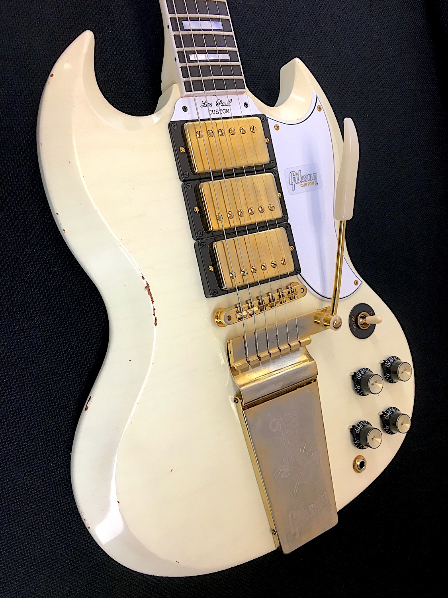
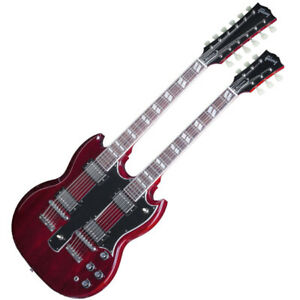
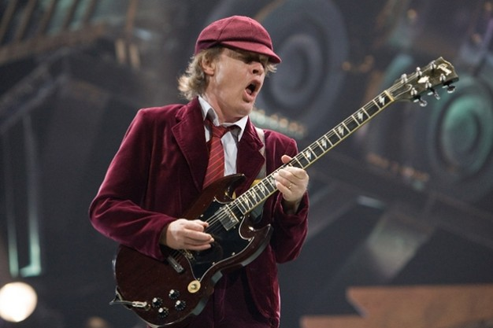
Caja hueca o HB
En el caso de las HB, los micrófonos (pastillas) y sus correspondientes controles se instalan sobre la tapa, y el abombamiento o arqueo de las tapas se realiza por medios mecánicos.
Para la construcción de la tapa armónica se emplea arce laminado. Aros, fondo y mástil de arce sólido y en la construcción de diapasón y puente, ébano en los modelos superiores y palo rosa en los modelos inferiores.
Desde el año 1.949 casi todos los modelos constan de “cutaway” para facilitar el acceso a los trastes más altos.
En el año 1.954, técnicos de Gibson diseñan una pastilla de doble bobinado (humbucking) que consigue reducir los ruidos parásitos que se derivaban de las pastillas de alnico (aleación de aluminio,níquel y cobalto) que se usaban hasta es momento.
En la segunda década de los años 50 esta pastilla llevaba en su reverso la inscripción PAF (Patend-Applied-For) aunque realmente no se homologó hasta finales del año 59. Estas siglas forman parte de la historia de la guitarra eléctrica y su sonido sigue siendo una apuesta segura y con personalidad.
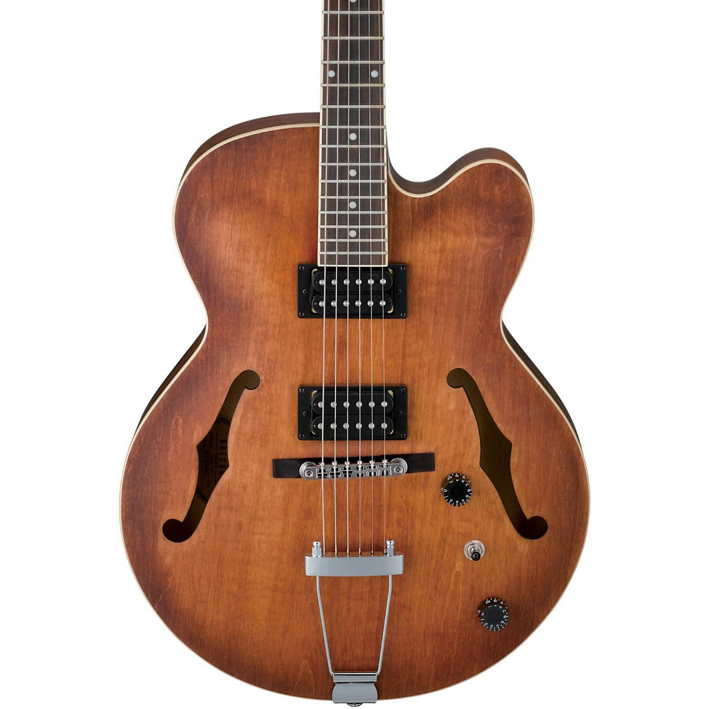
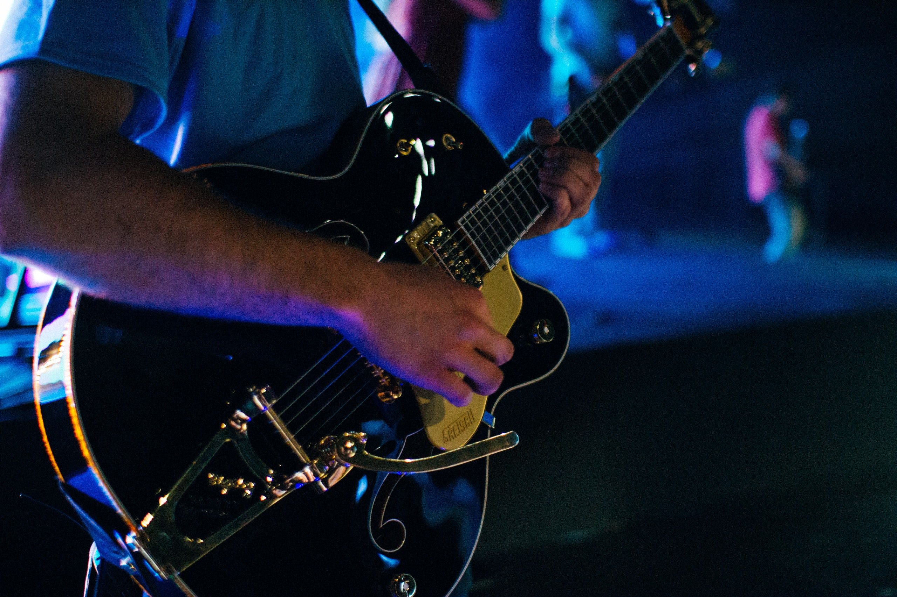
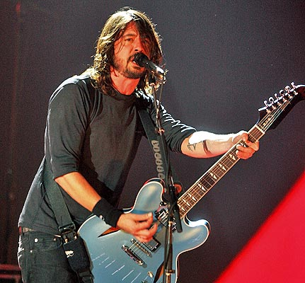
Forma de V
Están hechas con madera Korina, una marca comercial de limba, una madera similar pero más ligera que la caoba. Los primeros prototipos se fabricaron en 1957. Estas Flying V, junto con las Explorer e, inicialmente, la Moderne, formaban una línea modernista diseñada por el entonces presidente Ted McCarty. Estos diseños buscaban darle un aspecto más futurista a la imagen de Gibson, pero no tuvieron éxito en las ventas. La línea inicial lanzada en 1958 se dejó de fabricar en 1959.
A mediado de los años '60, guitarristas como Albert King, Lonnie Mack, Dave Davies, Keith Richards y Jimi Hendrix, en la búsqueda de un aspecto distintivo y un sonido potente, comienzan a usar guitarras Flying V. El renovado interés crea una demanda para que Gibson vuelva a fabricar el modelo.
Gibson vuelve a fabricar la guitarra en 1966, actualizando su diseño con un golpeador mayor y más estilo, y sustituyendo el puente original, que inserta las cuerdas por la parte posterior, por el puente 'stopbar' más común en los modelos Gibson. Algunos modelos se vendieron con una pequeña palanca de vibrato. Este modelo de 1966 es ahora el estándar para Flying V o, como Gibson lo llama, "V Factor X".
Como parte de una serie de ediciones limitadas que realizó la compañía en el año 2007 la Flying V tuvo una versión especial que giraba su diseño, el nombre de la guitarra fue Reverse Flying V.
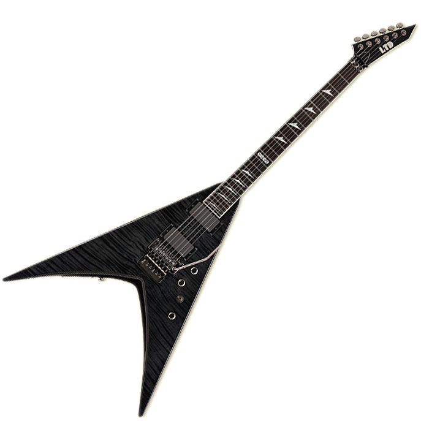
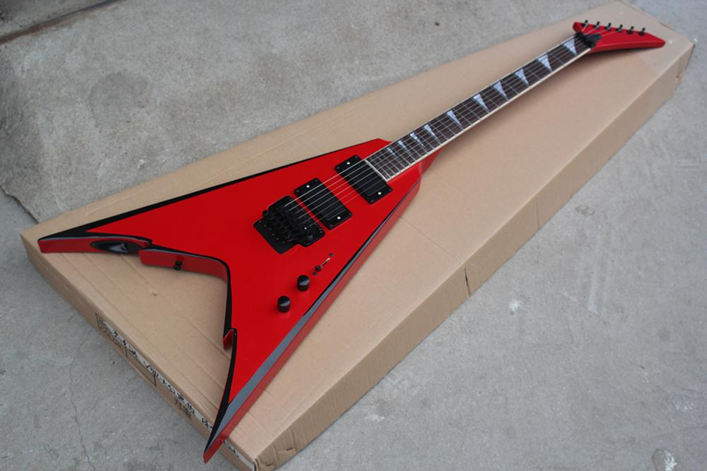
Explorer
En la edición de 1957 de la feria de muestras de la NAMM (National Association of Music Merchants), Gibson se presentó con sus tres nuevos modelos de línea futurista: Explorer, Flying V y Moderne, que sorprendieron a la industria de instrumentos musicales y se revelaron demasiado avanzados para su tiempo. Junto con su impactante diseño, tenían en común el estar construidas con korina —también conocida como limba—, una madera tropical procedente de África occidental, de aspecto similar a la caoba aunque más clara, y que la compañía ya había utilizado para sus «lap-steel».
En particular, la Gibson Explorer original tenía el cuerpo y mástil totalmente fabricados en korina con un acabado natural que mostraba las vetas de la madera; e incorporaba dos fonocaptores o «pastillas» de bobinado doble o «humbuckers» junto a dos potenciómetros de volumen y otro de tono. El encordado era idéntico al de la Les Paul, ya que utilizaba un puente Tune-O-Matic. El diapasón era de palisandro, con 22 trastes y marcadores de nácar. Este modelo salió a la venta el 1 de julio de 1958 a un precio de 247,50 dólares; con el paso de los años se ha convertido en una de las piezas de colección más caras del mercado: en 2011, su precio rondaba entre los 250.000 y los 310.000 dólares.
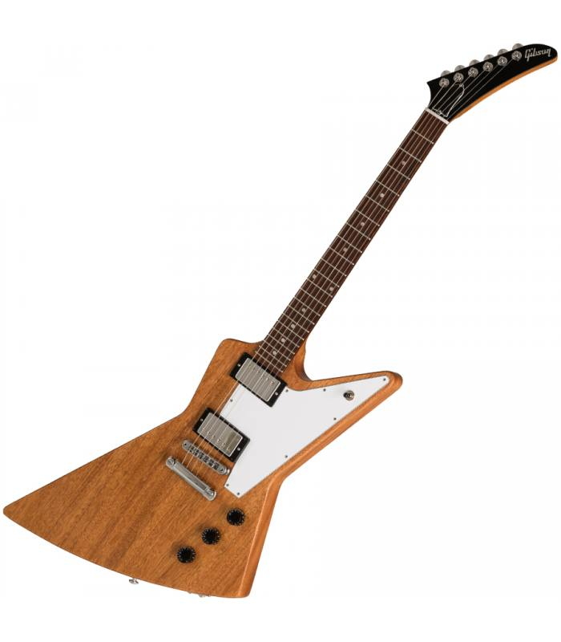
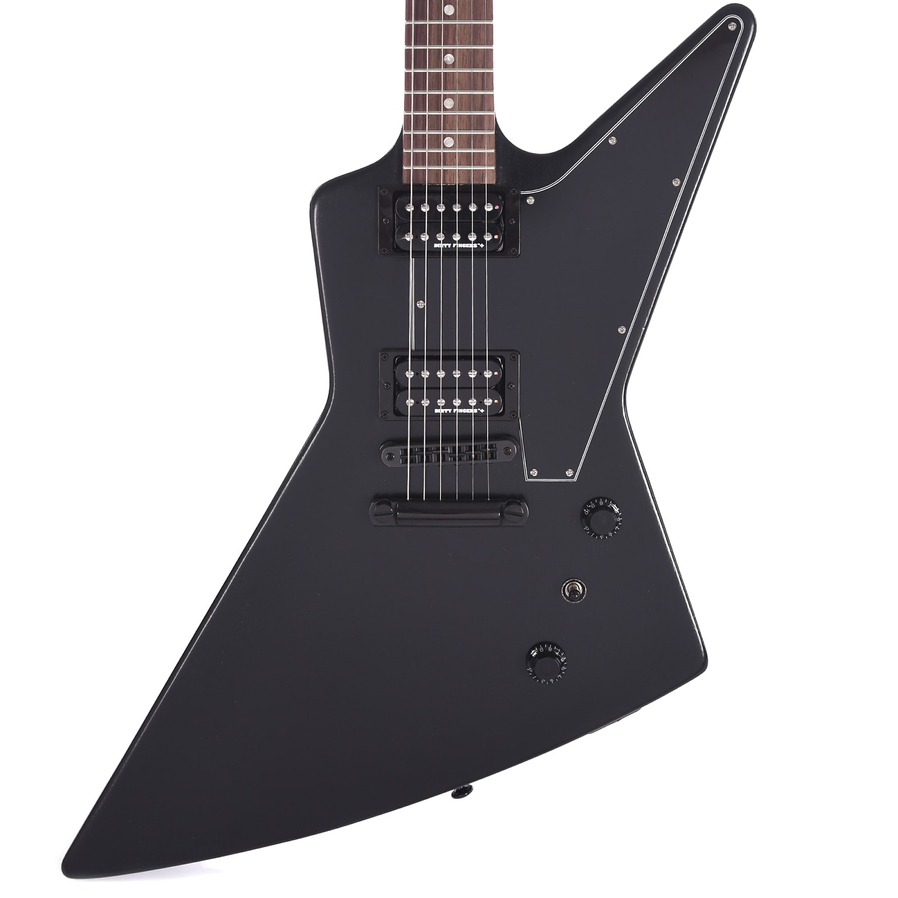
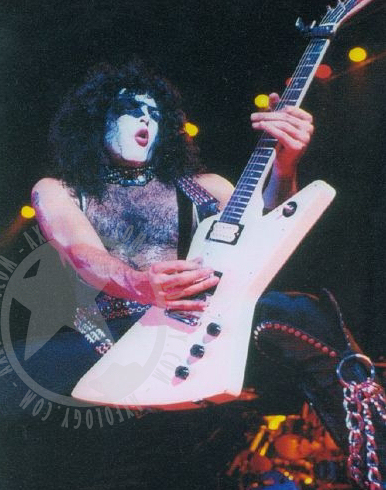
Firebird
La Gibson Firebird es un modelo de guitarra eléctrica de cuerpo macizo, fabricado por Gibson desde los años 60.
Una de sus principales características es que el mástil y el centro del cuerpo son un único bloque de madera, (en inglés, a stick Thru-body) y a los lados de esta pieza central se unen otras dos para conformar el cuerpo de la guitarra. Sin embargo, también se fabrican con mástil encolado, más tradicional en otras Gibson. Además, es la primera guitarra en utilizar pastillas Mini Humbucker, más comunes en guitarras de Epiphone. Otra característica de la Firebird es el clavijero invertido.
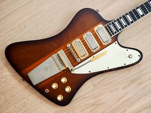
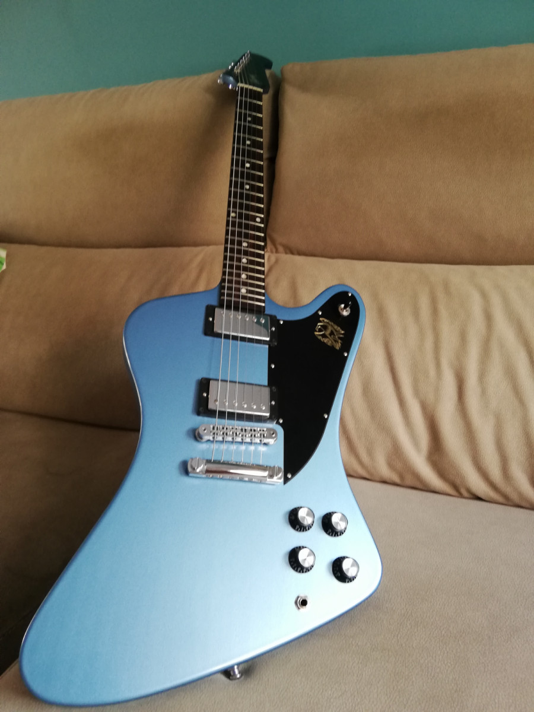
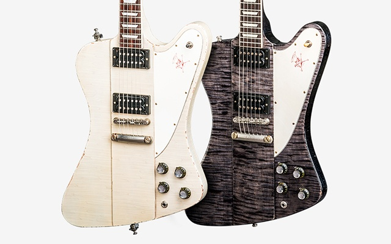
Otro tipo de guitarras
A parte de estas guitarras, hay muchos modelos que no he nombrado pero que igualmente han sido iconicos aunque en menor medida.
Fender Jaguar
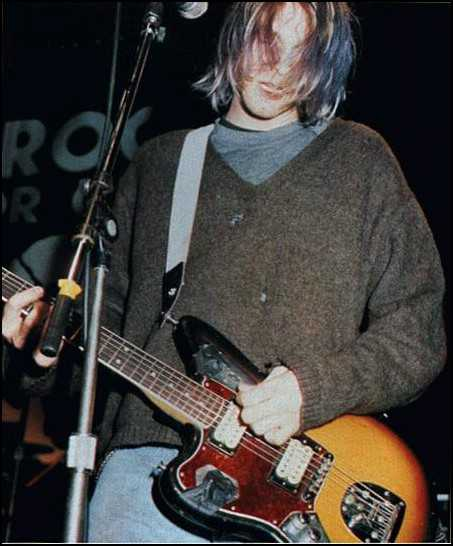
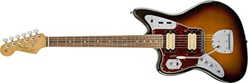
Fender Mustang
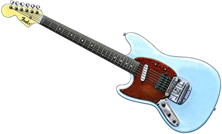
Ibanez Steve Vai Signature
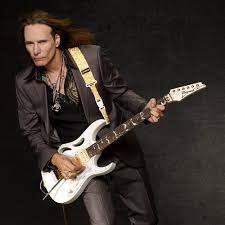
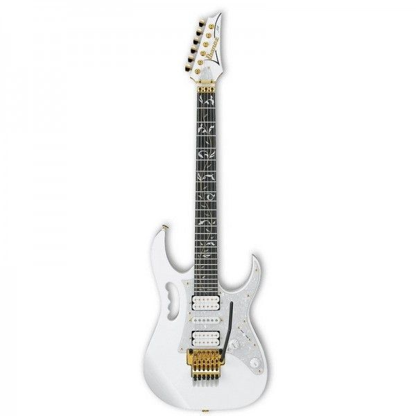
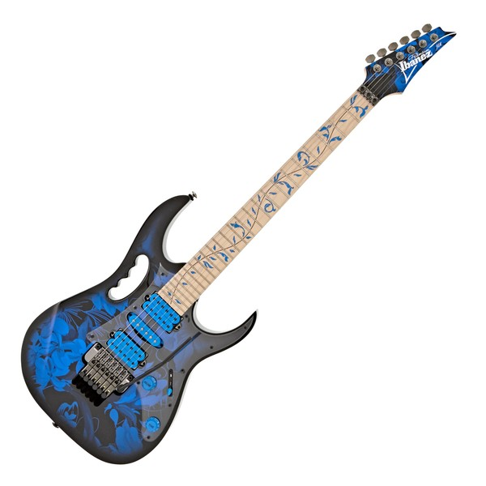
Y a parte de estas guitarras, hay innumerables que han sido especialmente personalizadas o creadas directamente a medida para artistas
 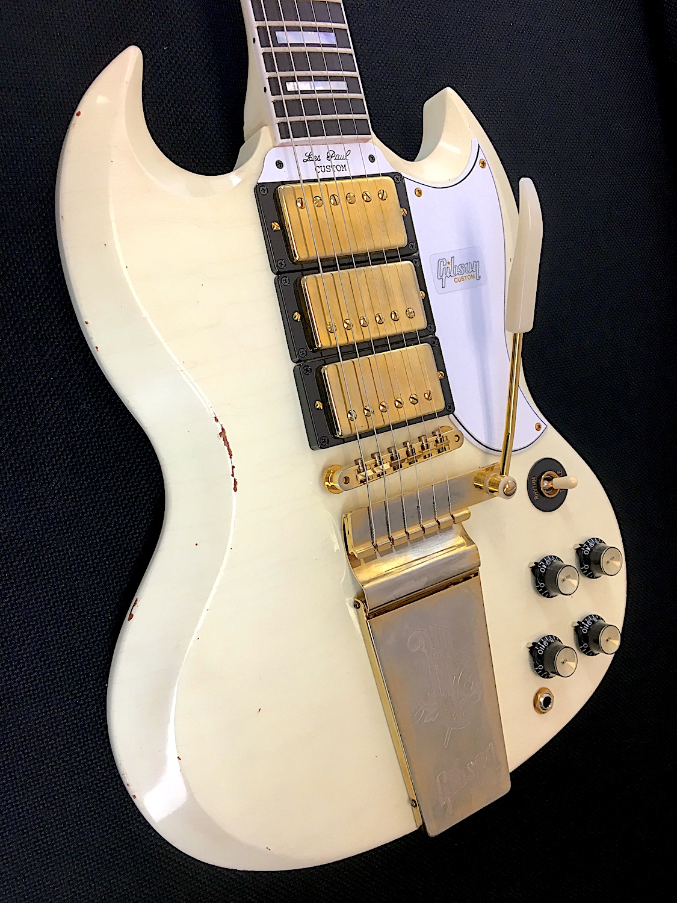
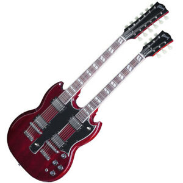
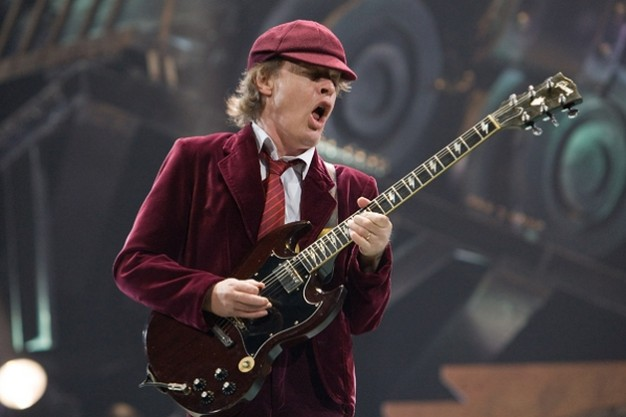
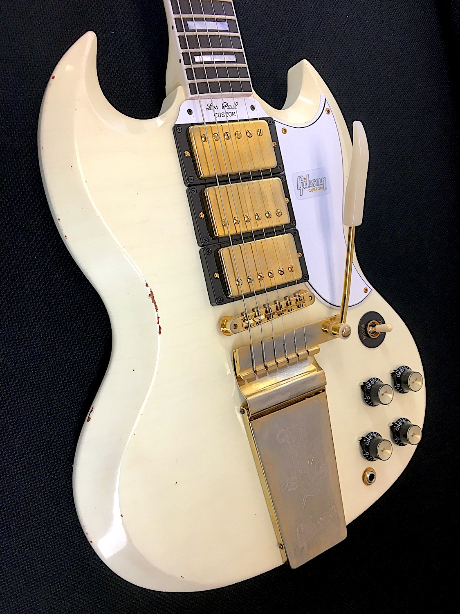
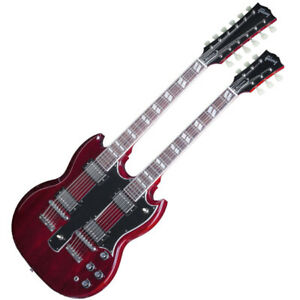
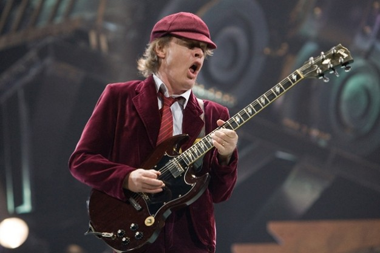
 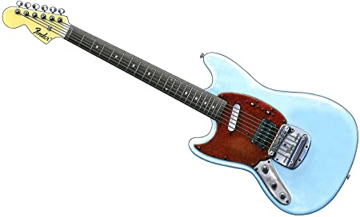
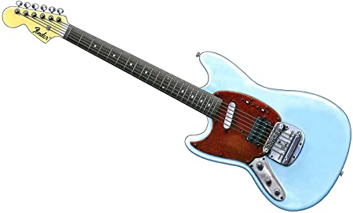